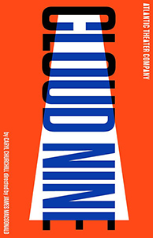
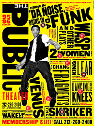
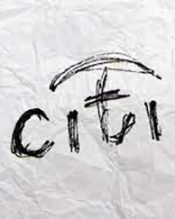
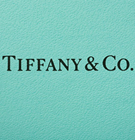
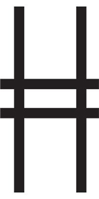

Diseñador Gráfico
PAULA SCHER
"Las identidades son el comienzo de todo. Son cómo se reconoce y comprende algo. ¿Qué podría ser mejor que eso?"

Atlantic
Se intenta transmitir la identidad de imagen con un logo.
Valuado en USD 4.500.
Diseñado en 1994

The Public Theatre
Fue el proyecto más influyente de todos
Valuado en USD 30.500.
Diseñado en 1994

Citibank
Se susionaron dos logos generando uno.
Valuado en USD 7.000.
Diseñado en 1998

Tiffany & Co.
Generó contemporaneidad en los estadoundenses.
Valuado en USD 5.000.
Diseñado en 2003

High Line
Originariamente, querían mostrar vías de un tren.
Valuado en USD 9.000.
Diseñado en 2009